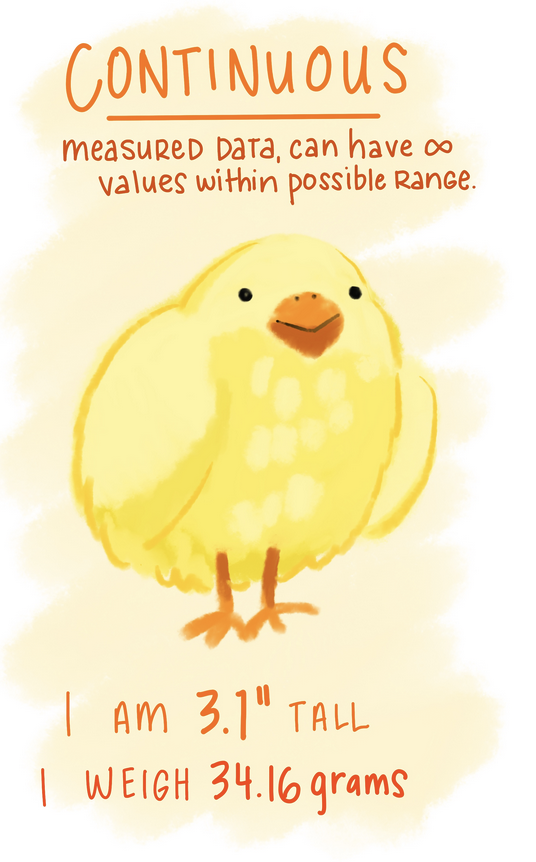
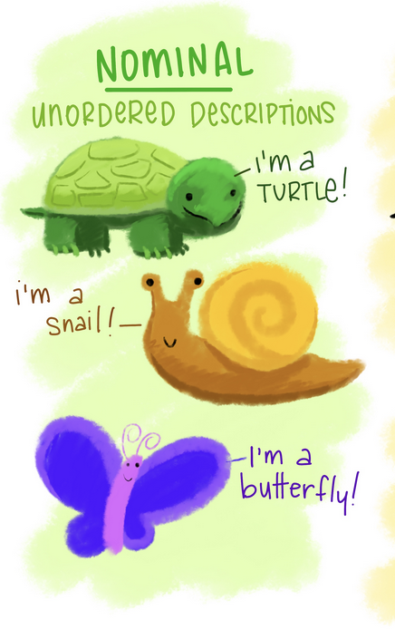

library(ggplot2) # this came installed with tidyverse
library(gtsummary) # for fancy summary tables
ncbirths <- openintro::ncbirths 4 Working with Data Frames
In this lesson we will learn how to summarize data in a data frame, and to do basic data management tasks such as making new variables, recoding data and dealing with missing data.
In 2004, the state of North Carolina released to the public a large dataset containing information on births recorded in this state. This dataset has been of interest to medical researchers who are studying the relation between habits and practices of expectant mothers and the birth of their children. The
ncbirths data frame is a random sample of 1,000 cases from this dataset.This first code chunk loads the ggplot2 package so we can access plotting functions, and then load the ncbirths data set, which comes with the openintro package.
4.1 Summarizing data
Two common methods used to summarize data are frequnecy tables for categorical variables (e.g. nominal, ordinal), and summary statistics for numeric (continuous or discrete) variables.


4.1.1 Frequency Tables
Frequency tables are used only any type of categorical data (Nominal, ordinal or binary), and the table results show you how many records in the data set have that particular level.
You can create a basic frequency table by using the table() function.
table(ncbirths$lowbirthweight)
low not low
111 889 Relative frequencies (proportions or percentages) are calculated by putting the results of the table function inside the prop_table function.
prop.table(
table(ncbirths$lowbirthweight)
)
low not low
0.111 0.889 The variable ncbirths$lowbirthweight has 111 (11.1%) records with a value of low, and 889 (88.9%) records with the value of not low.
4.1.2 Summary Statistics
Numerical variables can be summarized using quantities called summary statistics which include the min, max, mean and median. The function summary() prints out the five number summary, and includes the mean. This function also displays the number of missing values for that variable.
summary(ncbirths$visits) Min. 1st Qu. Median Mean 3rd Qu. Max. NA's
0.0 10.0 12.0 12.1 15.0 30.0 9 There are also individual functions available
# not run
mean(ncbirths$visits)
median(ncbirths$visits)
sd(ncbirths$visits)
max(ncbirths$visits)
min(ncbirths$visits)4.1.3 Fancy summary tables
The gtsummary package provides a single function tbl_summary to create a really nicely formatted summary table for both quantitative and categorical data types.
The first argument is the data set, then you include the vector of variable that you want to display in the table. By default the sample size n and the relative percent are presented for categorical data, and the median, with first and third quartiles shown for quantitiatve data.
tbl_summary(ncbirths,
include = c(visits, lowbirthweight)
)| Characteristic | N = 1,0001 |
|---|---|
| visits | 12 (10, 15) |
| Unknown | 9 |
| lowbirthweight | |
| low | 111 (11%) |
| not low | 889 (89%) |
| 1 Median (Q1, Q3); n (%) | |
The statistic argument can be used to change what values are displayed. Here we are specifying we want the mean {mean} and standard deviation {sd} for all variables that R sees as continuous (numeric), and both the frequency {n}, the total number of non-missing values {N} and the percent {p} for each level of a categorical variable.
tbl_summary(ncbirths,
include = c(visits, lowbirthweight),
statistic = list(
all_continuous() ~ "{mean} ({sd})",
all_categorical() ~ "{n} / {N} ({p}%)"
)
)| Characteristic | N = 1,0001 |
|---|---|
| visits | 12 (4) |
| Unknown | 9 |
| lowbirthweight | |
| low | 111 / 1,000 (11%) |
| not low | 889 / 1,000 (89%) |
| 1 Mean (SD); n / N (%) | |
4.2 Missing Data
Sometimes the value for a variable is missing. Think of it as a blank cell in an spreadsheet. Missing data can be a result of many things: skip patterns in a survey (i.e. non-smokers don’t get asked how many packs per week they smoke), errors in data reads from a machine, researchers skipped a day of data collection for one plant on accident etc.
R puts a NA as a placeholder when the value for that piece of data is missing. We can see 4 out of the first 6 values for the variable fage (fathers age) in the ncbirths data set are missing.
head(ncbirths$fage)[1] NA NA 19 21 NA NAProblem 1: R can’t do arithmetic on missing data.
So 5 + NA = NA, and if you were to try to calculate the mean() of a variable, you’d also get NA.
mean(ncbirths$fage)[1] NAProblem 2: Some plots will show NA as it’s own category
Sometimes this is fine, other times this is undesirable. We’ll see later how we can adjust this plot to remove that column of NA.
ggplot(ncbirths, aes(premie)) + geom_bar()
Missing values can cause some problems during analysis or undesirable features in a plot so let’s see how to detect missing values and how to work around them.
4.2.1 Identifying missing values
To find out how many values in a particular variable are missing we can use several different approaches.
Look at the raw data
We can look at the raw data using head() or opening the data set in the spreadsheet view and skim with our eyes for NA values. This may not be helpful if there is no missing values in the first 6 rows, or if there is a large number of variables to look through.
head(ncbirths)# A tibble: 6 × 13
fage mage mature weeks premie visits marital gained weight lowbirthweight
<int> <int> <fct> <int> <fct> <int> <fct> <int> <dbl> <fct>
1 NA 13 younger … 39 full … 10 not ma… 38 7.63 not low
2 NA 14 younger … 42 full … 15 not ma… 20 7.88 not low
3 19 15 younger … 37 full … 11 not ma… 38 6.63 not low
4 21 15 younger … 41 full … 6 not ma… 34 8 not low
5 NA 15 younger … 39 full … 9 not ma… 27 6.38 not low
6 NA 15 younger … 38 full … 19 not ma… 22 5.38 low
# ℹ 3 more variables: gender <fct>, habit <fct>, whitemom <fct>Look at data summaries
Functions such as table() have a useNA="always" option to show how many records have missing values, and summary() will always show a column for NA.
table(ncbirths$habit, useNA="always")
nonsmoker smoker <NA>
873 126 1 summary(ncbirths$fage) Min. 1st Qu. Median Mean 3rd Qu. Max. NA's
14.00 25.00 30.00 30.26 35.00 55.00 171 Use a logical statement
The function is.na() returns TRUE or FALSE for each element in the provided vector for whether or not that element is missing.
x <- c("green", NA, 3)
is.na(x)[1] FALSE TRUE FALSEIn this example, the vector x is created with three elements, the second one is missing. Calling the function is.na() on the vector x, results in three values, where only the second one is TRUE – meaning the second element is missing.
This can be extended to do things such as using the sum() function to count the number of missing values in a variable. Here we are nesting the functions is.na() is written entirely inside the sum() function.
sum(is.na(ncbirths$fage))[1] 171There are 171 records in this data set where the age for the father is not present.
Negating
is.na() to find the non-missing values
Sometimes you want to operate only only the non-missing values. Recall from ?sec-logical we can use the ! to negate a boolean argument.
!is.na(x)[1] TRUE FALSE TRUEThe first and third values are TRUE - so they are not missing.
4.3 Data management
Sometimes we have a need to create or modify variables in a data frame. You will learn several ways to do this throughout this course, but we will start by using base R functions and methods. These are methods that use functions that come with R, not from additional packages.
4.3.1 Overwrite existing values
Choose all observations (rows) of a data set, where a variable is equal to some value, then set assign <- a new_value to those rows.
data[data$variable==value] <- new_value # example code to show syntax.
Example: Too low birthweight
Let’s look at the numerical distribution of birthweight (in pounds) of the baby.
summary(ncbirths$weight) Min. 1st Qu. Median Mean 3rd Qu. Max.
1.000 6.380 7.310 7.101 8.060 11.750 The value of 1 lb seems very low. The researchers you are working with decide that is a mistake and should be excluded from the data. We would then set all records where weight=1 to missing.
ncbirths$weight[ncbirths$weight==1] <- NACode explainer:
- The specific variable
ncbirths$weightis on the left side outside the[]. So just the variableweightis being changed. - Recall that bracket notation
[]can be used to select rows where a certain logical statement is true. So[ncbirths$weight==1]will only show records whereweightis equal to 1. - Notice where the assignment arrow (
<-) is at. This code assigns the value ofNA(missing) to the variableweight, whereweight==1.
min(ncbirths$weight, na.rm=TRUE)[1] 1.19The minimum weight is now 1.19.
4.3.2 Creating new variables
New variables should be added to the data frame
This can be done in base R using $ sign notation.
The new variable you want to create goes on the left side of the assignment operator <-, and how you want to create that new variable goes on the right side.
data$new_variable <- creation_statement # example code not run
Example: Row-wise difference between two existing variables
As a pregnancy progresses, both the mother and the baby gain weight. The variable gained is the total amount of weight the mother gained in her pregnancy. The variable weight is how much the baby weighed at birth.
The following code creates a new variable wtgain_mom the weight gained by the mother, that is not due to the baby by subtracting weight from gained. Note all variables are prefaced with $, denoting that they exist inside the ncbirths data set.
ncbirths$wtgain_mom <- ncbirths$gained - ncbirths$weightTo confirm this variable was created correctly, we look at the data contained in three variables in question.
head(ncbirths[,c('gained', 'weight', 'wtgain_mom')])# A tibble: 6 × 3
gained weight wtgain_mom
<int> <dbl> <dbl>
1 38 7.63 30.4
2 20 7.88 12.1
3 38 6.63 31.4
4 34 8 26
5 27 6.38 20.6
6 22 5.38 16.6
Trust but Verify
It’s always important to visually confirm that the code you wrote actually had the intended effect.
4.3.3 Dichtomizing data
The ifelse() is hands down the easiest way to create a binary variable (dichotomizing, only 2 levels)
Let’s add a variable to identify if a mother in the North Carolina births data set was underage at the time of birth. Specifically Make a new variable underage on the ncbirths data set. If mage is under 18, then the value of this new variable is underage, else it is labeled as adult.
ncbirths$underage <- ifelse(ncbirths$mage < 18, "underage", "adult")Code explainer:
- The function is
ifelse()- one word. - The arguments are:
ifelse(logical, value if TRUE, value if FALSE)- The
logicalargument is a statement that resolves as abooleanvariable, as either TRUE or FALSE. - The second argument is what you want the resulting variable to contain if the logical argument is
TRUE. - The last argument is what you want the resulting variable to contain if the logical argument is
FALSE.
- The
Trust but Verify
First let’s look at the frequency table of underage and see if records exist with the new categories, and if there are any missing values.
table(ncbirths$underage, useNA="always")
adult underage <NA>
963 37 0 Next let’s check it against the value of mage itself. Let’s look at all rows where mothers age is either 17 or 18 mage %in% c(17,18), and only the columns of interest.
ncbirths[ncbirths$mage %in% c(17,18),c('mage', 'underage')]# A tibble: 57 × 2
mage underage
<int> <chr>
1 17 underage
2 17 underage
3 17 underage
4 17 underage
5 17 underage
6 17 underage
7 17 underage
8 17 underage
9 17 underage
10 17 underage
# ℹ 47 more rowsNotice I snuck a new operator in on you - %in%. This is a way you can provide a list of values (a.k.a a vector) and say “if the value of the variable I want is %in% any of these options in this vector…” do the thing.
4.4 Chaining commands
Two common styles:
|>This is the “native” pipe that’s built into R.%>%This pipe is loaded with thetidyversepackage.
They both function the same, but you’ll see both being used so it’s good to know that they both exist. That way if you are not using other functions from the tidyverse, you can still enjoy the chaining functionality.
4.4.1 What is “Chaining”?
The pipe lets you string set of functions together, like links on a chain, to be completed in the order specified. This works with the majority of functions, specifically when the result of the function is a data frame, a vector, or sometimes the results of a model.
“and then….”
This is what I read to myself when using the pipe. “Do this |> the next thing |> do this third thing |> this last”
These can be read as
- Get the
maturevariable from thencbirthsdata set - and then create a frequency table on that variable
and
- Get the
magevariable from thencbirthsdata set - and then calculate the mean of that variable
These may be trivial examples now but the usefulness of this approach will be apparent before the class is finished.
Behind the scenes
What actually is happening, is that the result from the code on the left of the |> gets passed into the first argument of the commands on the right hand side. Two things to keep in mind:
- Do not include the variable on both sides.
ncbirths$mature |> ✅
table()
ncbirths$mature |>
table(ncbirths$mature) ❌- the pipe itself must be at the end of a “sentence”.
ncbirths$mature |> ✅
table()
ncbirths$mature ❌
|> table()